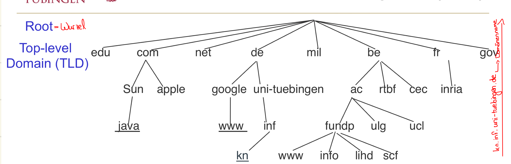

<div class="block">
  <div class="container site-border">
    <h2>SMTP (Simple Mail Transfer Protocol)</h2>
    <p>
      ist ein Protokoll zur Übertragung von E-Mails über das Internet. Es wird
      verwendet, um E-Mails von einem Mail-Client (z.B. Outlook, Thunderbird) an
      einen Mail-Server zu senden und von dort an den Empfänger weiterzuleiten.
    </p>
    <p>
      SMTP ist ein Server-Protokoll, das auf Port 25 (Standard), 587 (TLS/SSL)
      oder 465 (SSL) lauscht.
    </p>
    <p>Es wird unter anderen von PHPMailer verwendet.</p>

    <h2>TLS (Transport Layer Security)</h2>
    <p>
      TLS ist ein kryptografisches Protokoll (Transportverschlüsselung), das zur
      Sicherung von Datenübertragungen über das Internet dient. Es wird häufig
      in Verbindung mit SMTP verwendet, um E-Mails sicher zu übertragen. TLS
      verschlüsselt die Kommunikation zwischen dem Mail-Client und dem
      Mail-Server, um sicherzustellen, dass sensible Informationen nicht
      abgehört werden können.
    </p>

    <h2>Man in the Middle Angriff</h2>
    <p>
      Angreifer Trudy hat Kommunikationskanal zwischen Alice und Bob komplett
      übernommen. Alice und Bob kommunizieren über asymmetrische
      Verschlüsselung. Beide kennen öffentlichen Schlüssel des anderen noch
      nicht.
    </p>
    <p>
      Alice fordert Schlüssel von Bob. Bob sendet Schlüssel. Dazwischen kann
      Trudy sitzen, die den Schlüssel von Bob abfängt, verändert und an Alice
      weitergibt. Trudy kann nun Nachrichten von Alice an Bob entschlüsseln.
    </p>
    
    <h2>SSL</h2>
    <p>
      SSL (Secure Sockets Layer) ist ein kryptografisches Protokoll, das zur
      Sicherung von Datenübertragungen über das Internet dient. Es wird häufig
      in Verbindung mit SMTP verwendet, um E-Mails sicher zu übertragen. SSL
      verschlüsselt die Kommunikation zwischen dem Mail-Client und dem
      Mail-Server, um sicherzustellen, dass sensible Informationen nicht
      abgehört werden können.
    </p>
    <p>
      Ein SSL-Zertifikat ist im Grunde dein digitaler Sicherheitsausweis für
      eine Website. Es sorgt dafür, dass die Verbindung zwischen Browser und
      Server verschlüsselt und vertrauenswürdig ist (Firmenprüfung, ob diese
      Firma wirklich existiert / Ansprechpartner vorhanden?). Erkennbar an
      https. Diese Verschlüsselung ist Pflicht für moderne Websites, gerade bei
      Daten (Passwörter, Formulare, Login etc.), damit diese nicht mitgelesen
      werden können. Das verhindert Man-in-the-Middle Angriffe und ist ebenso
      wichtig für das SEO Ranking.
    </p>
    <p>Es gibt verschiedene Arten von SSL-Zertifikaten:</p>
    <ul>
      <li>
        Domain SSL (Domain Validated SSL): gilt für eine Domain, keine
        Firmenüprüfung, nur Besitz der Domain wird geprüft
      </li>
      <li>Domain SSL Wildcard: gilt für eine Domain und alle Subdomains</li>
      <li>
        Organisation SSL: gilt für eine Domain, Firmenprüfung, Firmename wird im
        Zertifikat angezeigt
      </li>
      <li>
        Organisation SSL Wildcard: kombiniert Firmenprüfung und SSL für alle
        Subdomains
      </li>
      <li>
        Extended SSL: Sehr hohe Vertrauensstufe und noch strengere Firmenprüfung
      </li>
    </ul>

    <h2>POP3</h2>
    <p>
      POP3 (Post Office Protocol Version 3) ist ein Protokoll zum Abrufen von
      E-Mails von einem Mail-Server. Es ermöglicht es Benutzern, ihre E-Mails
      herunterzuladen und lokal auf ihrem Gerät zu speichern. POP3 ist ein
      einfaches Protokoll, das keine Synchronisation zwischen dem Mail-Client
      und dem Mail-Server unterstützt. Sobald die E-Mails heruntergeladen
      wurden, werden sie normalerweise vom Server gelöscht.
    </p>

    <h2>IMAP</h2>
    <p>
      IMAP (Internet Message Access Protocol) ist ein Protokoll zum Abrufen von
      E-Mails von einem Mail-Server. Im Gegensatz zu POP3 ermöglicht IMAP die
      Synchronisation zwischen dem Mail-Client und dem Mail-Server. E-Mails
      bleiben auf dem Server gespeichert, und Benutzer können von verschiedenen
      Geräten aus auf ihre E-Mails zugreifen. IMAP unterstützt auch
      Ordnerstrukturen und das Markieren von E-Mails als gelesen oder ungelesen.
    </p>

    <h2>PHP mail()</h2>
    <p>
      <code>mail()</code> ist eine in PHP integrierte Funktion zum Versenden von
      E-Mails. Sie ermöglicht es einem PHP-Skript, eine E-Mail an einen oder
      mehrere Empfänger zu übergeben. Dabei verschickt PHP die E-Mail jedoch
      nicht selbst direkt an den Empfänger. Stattdessen übergibt PHP die
      Nachricht an die auf dem Server eingerichtete Mail-Infrastruktur.
    </p>
    <p>
      Der grundsätzliche Ablauf ist folgender: Das PHP-Skript ruft die Funktion
      <code>mail()</code> auf und übergibt unter anderem die Empfängeradresse,
      den Betreff, den Nachrichtentext und optional weitere Header. PHP übergibt
      diese Informationen anschließend an den auf dem Server konfigurierten
      Mailserver beziehungsweise Mail Transfer Agent (MTA). Dieser übernimmt die
      eigentliche Weiterleitung der E-Mail über das Internet.
    </p>
    <p>
      Der Mailserver versucht anschließend, die Nachricht an den zuständigen
      Mailserver des Empfängers zu übertragen. Dafür wird üblicherweise das
      SMTP-Protokoll verwendet. Der Mailserver des Empfängers nimmt die
      Nachricht entweder an oder lehnt sie beispielsweise aufgrund von
      Spamverdacht, fehlender Authentifizierung oder einer ungültigen
      Empfängeradresse ab. Wird die Nachricht akzeptiert, wird sie anschließend
      im Postfach des Empfängers abgelegt. Es kann trotzdem vorkommen, dass die
      Nachricht später durch einen Spamfilter aussortiert wird.
    </p>
    <p>
      Ein einfaches Beispiel für die Verwendung von <code>mail()</code> sieht so
      aus:
    </p>
    <pre><code>$to = "max@example.com"; $subject = "Testmail"; $message = "Hallo Max!"; $headers = "From: webseite@example.com\r\n"; mail($to, $subject, $message, $headers);</code></pre>
    <p>
      Der erste Parameter enthält die Empfängeradresse. Der zweite Parameter ist
      der Betreff der E-Mail. Der dritte Parameter enthält den eigentlichen
      Nachrichtentext. Über den vierten Parameter können zusätzliche Header
      angegeben werden, beispielsweise die Absenderadresse oder weitere
      Informationen zur E-Mail.
    </p>
    <p>
      Eine wichtige Besonderheit von <code>mail()</code> ist der Rückgabewert.
      Gibt die Funktion <code>true</code> zurück, bedeutet das nicht
      automatisch, dass die E-Mail beim Empfänger angekommen ist. Es bedeutet im
      Wesentlichen, dass die Nachricht erfolgreich an die lokale
      Mail-Infrastruktur zur weiteren Verarbeitung übergeben wurde. Ob die
      Nachricht tatsächlich zugestellt wird, entscheidet sich erst bei den
      nachfolgenden Schritten.
    </p>
    <p>
      Eine der größten Grenzen von <code>mail()</code> ist deshalb die fehlende
      Zustellgarantie. Eine E-Mail kann beispielsweise wegen eines Spamfilters,
      einer schlechten Reputation des Mailservers, einer falschen
      DNS-Konfiguration oder wegen fehlender Authentifizierungsmechanismen
      abgelehnt oder als Spam eingestuft werden.
    </p>
    <p>
      Damit E-Mails heutzutage zuverlässig zugestellt werden können, spielen
      verschiedene Mechanismen eine wichtige Rolle. Dazu gehören insbesondere
      SPF, DKIM und DMARC. SPF kann festlegen, welche Server E-Mails für eine
      Domain versenden dürfen. DKIM ermöglicht eine kryptografische Signatur der
      Nachricht, mit der der empfangende Server die Echtheit beziehungsweise
      Integrität der Nachricht überprüfen kann. DMARC legt Regeln dafür fest,
      wie mit Nachrichten umgegangen werden soll, die diese Prüfungen nicht
      erfolgreich bestehen.
    </p>
    <p>
      Eine weitere Grenze besteht darin, dass <code>mail()</code> von der
      Konfiguration des Servers abhängig ist. Auf einem Webserver muss eine
      funktionierende Mail-Infrastruktur vorhanden und entsprechend konfiguriert
      sein. Auf einem lokalen Entwicklungsrechner funktioniert
      <code>mail()</code> deshalb häufig nicht ohne zusätzliche Einrichtung. Ob
      die Funktion verwendet werden kann und wie die Nachrichten tatsächlich
      versendet werden, hängt unter anderem vom Hostinganbieter und der
      Serverkonfiguration ab.
    </p>
    <p>
      <code>mail()</code> bietet außerdem nur eine relativ einfache
      Schnittstelle. Bei komplexeren Anforderungen wird die Verwendung schnell
      unübersichtlich. Beispielsweise können HTML-E-Mails, Anhänge, CC- und
      BCC-Empfänger sowie verschiedene Header zwar grundsätzlich umgesetzt
      werden, müssen bei <code>mail()</code> aber weitgehend selbst über Header
      und den Nachrichteninhalt aufgebaut werden.
    </p>
    <p>
      Für umfangreichere Anwendungen wird deshalb häufig eine spezialisierte
      PHP-Mailbibliothek verwendet. Bekannte Beispiele sind PHPMailer und
      Symfony Mailer. Solche Bibliotheken können beispielsweise die
      Kommunikation mit einem SMTP-Server, Authentifizierung, Verschlüsselung,
      Anhänge und den Aufbau komplexer E-Mails komfortabler handhaben.
    </p>
    <p>
      Ein weiterer wichtiger Punkt ist die Sicherheit. Benutzereingaben dürfen
      nicht ungeprüft in E-Mail-Header übernommen werden. Besonders bei Headern
      wie <code>From</code> oder <code>Reply-To</code> besteht bei unsicherer
      Verarbeitung die Gefahr einer sogenannten Header Injection. Eingaben aus
      Kontaktformularen sollten deshalb vor der Verwendung überprüft und
      entsprechend validiert werden.
    </p>
    <p>
      Für kleine und einfache Websites kann <code>mail()</code> trotzdem
      ausreichend sein. Ein typisches Beispiel ist ein Kontaktformular, bei dem
      eine Nachricht an den Betreiber einer Website geschickt werden soll. Für
      Anwendungen mit einem größeren Versandvolumen oder hohen Anforderungen an
      Zustellbarkeit und Kontrolle ist dagegen ein korrekt konfigurierter
      SMTP-Versand mit einer geeigneten Mailbibliothek oder einem
      spezialisierten E-Mail-Dienst meist besser geeignet.
    </p>
    <p>
      Zusammengefasst ist <code>mail()</code> also keine vollständige
      E-Mail-Infrastruktur. Die Funktion stellt lediglich eine einfache
      Schnittstelle zwischen einem PHP-Skript und der auf dem Server vorhandenen
      Mail-Infrastruktur bereit. PHP erstellt beziehungsweise übergibt die
      Nachricht, während der Mailserver die eigentliche Kommunikation mit
      anderen Mailservern übernimmt. Die tatsächliche Zustellung kann PHP mit
      <code>mail()</code> nicht garantieren.
    </p>

    <h2>PHP-Mailer</h2>
    <p>
      PHPMailer ist eine beliebte Bibliothek für das Senden von E-Mails in PHP.
      Sie bietet eine einfache und sichere Methode, um E-Mails mit verschiedenen
      SMTP-Servern zu versenden. PHPMailer unterstützt auch HTML-E-Mails,
      Anhänge und verschiedene Authentifizierungsmethoden.
    </p>

    <h2>Wie wird eine Mail versendet?</h2>
    <p>
      Formular -> Server -> SMTP-Mailserver -> Internet -> Empfänger-Mailserver
      -> Postfach
    </p>
    <p>
      Um eine E-Mail zu versenden, folgt der Mail-Client dem SMTP-Protokoll. Der
      Mail-Client sendet die E-Mail an den SMTP-Server, der sie dann an den
      Empfänger weiterleitet. Dabei werden die E-Mails verschlüsselt übertragen,
      um sicherzustellen, dass sensible Informationen nicht abgehört werden
      können.
    </p>

    <h2>Was ist hosting?</h2>
    <p>
      Hosting ist der Dienst, bei dem Webseiten und E-Mail-Adressen auf Servern
      gespeichert und über das Internet zugänglich gemacht werden. Ein
      Hosting-Anbieter stellt den Speicherplatz, die Bandbreite und die
      technischen Ressourcen bereit, die für das Betreiben einer Website oder
      eines E-Mail-Servers erforderlich sind. Vorgang: Du mietest dir
      Speicherplatz auf einem Server (Webhosting) und kannst dort deine Webseite
      und E-Mail-Adressen einrichten. Der Hosting-Anbieter kümmert sich um die
      technische Infrastruktur, Sicherheit und Wartung der Server.
    </p>

    <h2>Domains</h2>
    <p>
      Eine Domain ist die Internetadresse einer Website. Ohne Domains müsste
      jede Website über eine IP Adresse aufgerufen werden. Eine Domain besteht
      aus Subdomain, Hauptdomain und Domainendung (Top-Level-Domain).
    </p>
    <p>
      Die TLD geben Hinweise auf Herkunft, Zweck oder Zielgruppe einer Website.
      Länderspezifische TLDs wie zB .de richten sich an Nutzer des jeweiligen
      Landes und erzeugen Vertrauen und sind besser für lokale Suchmaschinen
      (SEO).
    </p>
    <p>
      Neue TLDs wie .shop, .blog etc können direkt zeigen worum es auf der
      Website geht.
    </p>
    <p>
      Generische TLDs wie .com (kommerziell), .org (Organisation), .net
      (network) sind universell und für globale Unternehmen geeignet.
    </p>

    <h2>Subdomains</h2>
    <p>
      Eine Subdomain ist eine Unterdomain einer Hauptdomain. zB
      www.relaunch.inside.at für die Hauptdomain inside.at
    </p>
    <h2>Welche Anbieter gibt es für hosting?</h2>
    <p>Host Europe: solide, aber nicht der beste und eher altbacken.</p>
    <p>Hostinger: sehr zu empfehlen.</p>
    <p>
      Für Typo3 Projekte sind managed Cloud / VPS Anbieter besonders geeignet.
      zB Hetzner oder netcup
    </p>
    <h2>Host Europe erklärt:</h2>
    <h3>KIS (Kundeninformationssystem)</h3>
    <h3>Neue Subdomain erreichbar machen:</h3>
    <ul>
      <li>Subdomain anlegen</li>
      <li>
        DNS Einträge konfigurieren: A-Record (muss auf IP-Adresse zeigen) oder
        CNAME (zeigt auf Hauptdomain)
      </li>
      <li>Zielverzeichnis der Subdomain festlegen</li>
      <li>SSL Zertifikat für HTTPS</li>
      <li>Erreichbarkeit testen per ping</li>
    </ul>
    <h3>Domainservices</h3>
    <p>
      Hier sind nur „echte“ Domains, die als Domainprodukt gebucht sind,
      aufgelistet.
    </p>
    <h2>Was ist eine Domain?</h2>
    <p>
      Eine Domain ist ein Name, der auf einen Webserver zeigt. Sie dient als
      Adresse, unter der eine Website oder E-Mail-Adresse erreichbar ist. Die
      Domain wird über das DNS (Domain Name System) auf den Server geleitet.
    </p>
    <h3>CPANEL</h3>
    <p>
      cPanel ist eine Webhosting-Verwaltungsoberfläche (Control Panel), mit der
      du einen Server oder Webspace bedienen kannst, ohne Linux-Kommandos lernen
      zu müssen. Damit kann man Domains, Subdomains hinzufügen, Weiterleitungen
      einrichten, Dateien verwalten, Datenbanken anlegen, Benutzer verwalten,
      Mailkonten erstellen, SSL-Zertifikate verwalten, Backups erstellen.
    </p>
    <h2>DNS (Domain Name System)</h2>
    <p>
      Das DNS (Domain Name System) ist ein Verzeichnis, das Domains auf
      IP-Adressen mappiert. IP Adressen wären nämlich sehr schwer zu merken. Es
      ermöglicht es Benutzern, Websites und E-Mail-Adressen über menschenlesbare
      Namen zu erreichen. DNS Server bilden dabei DNS Namen auf IP-Adressen ab.
    </p>
    
    <ul>
      <li>
        Root: Kennt die zuständigen Nameserver für die verschiedenen TLDs wie zB
        .de, .com, .org.
      </li>
      <li>
        TLDs: Kennen die zuständigen Nameserver für domains wie example.de
      </li>
      <li>Domain: auch authorative Nameserver</li>
      <li>Subdomains: Teilbereiche einer Domain</li>
    </ul>
    <p>
      Bei einer Anfrage übergibt der Browser den DNS-Namen an einen rekursiven
      DNS Resolver, der eine Anfrage an einen DNS Server stellt. Der Browser
      ruft die Website dann anhand der IP Adresse ab. Wenn also example.de
      abgefragt wird, dann fragt Root "Wer ist für .de zuständig", TLD fragt
      "Wer ist für example.de zuständig" und die IP wird dann zurück an den
      Browser zurückgegeben.
    </p>
    <h3>IP Adressen per DNS herausfinden</h3>
    <p>Hierfür wird nslookup verwendet. Dafür einfach eingeben:</p>
    <pre>nslookup [Zieladresse URL]</pre>
    
    <p>
      Oben in der Ausgabe steht dann der eigene Server und IP Adresse. Unten
      dann die Ziel IP der gesuchten URL. Non-authorative answer bedeutet, dass
      die Antwort von einem anderen DNS Server stammt und nicht direkt von dem
      authoritären, der für die DNS Zone zuständig ist.
    </p>

    <h2>Was ist ein Webserver?</h2>
    <p>
      Ein Webserver ist ein Computer, der Webseiten und andere Inhalte über das
      Internet bereitstellt. Er empfängt Anfragen von Browsern und sendet die
      entsprechenden Daten zurück.
    </p>
    <h2>DNS Einträge</h2>
    <p>
      Für den Versand von E-Mails sind bestimmte DNS-Einträge erforderlich, um
      sicherzustellen, dass die E-Mails korrekt zugestellt werden und nicht als
      Spam markiert werden. Die wichtigsten DNS-Einträge für E-Mails sind:
    </p>
    <ul>
      <li>
        <strong>MX-Einträge (Mail Exchange):</strong> Diese Einträge geben an,
        welche Mail-Server für die Domain zuständig sind und in welcher
        Reihenfolge sie kontaktiert werden sollen.
      </li>
      <li>
        <strong>SPF-Einträge (Sender Policy Framework):</strong> Diese Einträge
        legen fest, welche Server berechtigt sind, E-Mails im Namen der Domain
        zu senden. Sie helfen dabei, Spoofing und Phishing-Angriffe zu
        verhindern.
      </li>
      <li>
        <strong>DKIM-Einträge (DomainKeys Identified Mail):</strong> Diese
        Einträge ermöglichen es dem Empfänger-Mailserver, die Echtheit der
        E-Mail zu überprüfen, indem sie eine digitale Signatur enthalten, die
        mit dem privaten Schlüssel der Domain erstellt wurde. DomainKeys
        Identified Mail Es sorgt dafür, dass E-Mails echt sind und unterwegs
        nicht manipuliert wurden.
      </li>
      <li>
        <strong
          >DMARC-Einträge (Domain-based Message Authentication, Reporting &
          Conformance):</strong
        >
        Diese Einträge legen fest, wie der Empfänger-Mailserver mit E-Mails
        umgehen soll, die die SPF- und DKIM-Prüfungen nicht bestehen. Sie helfen
        dabei, die Domain vor Missbrauch zu schützen.
      </li>
    </ul>

    <h3>A-Record</h3>
    <p>
      Der A-Record (Address Record) ist ein DNS-Eintrag, der eine Domain auf
      eine IPv4-Adresse verweist. Er wird verwendet, um den Webserver zu
      identifizieren, auf dem die Website gehostet wird.
    </p>
    <h3>CNAME</h3>
    <p>
      Der CNAME-Record (Canonical Name Record) ist ein DNS-Eintrag, der einen
      Alias-Namen auf einen anderen DNS-Namen verweist. Er wird verwendet, um
      eine Domain auf eine andere Domain zu verlinken.
    </p>
    <h3>TTL</h3>
    <p>
      Der TTL (Time To Live) gibt an, wie lange ein DNS-Eintrag im Cache eines
      DNS-Servers gespeichert bleibt. Ein kürzerer TTL-Wert bedeutet, dass
      Änderungen schneller übernommen werden.
    </p>
    <h3>Nameserver</h3>
    <p>
      Nameserver sind Server, die für die Verwaltung und Auflösung von DNS-Namen
      verantwortlich sind. Sie speichern und verwalten die DNS-Einträge einer
      Domain.
    </p>
    <h3>Firewall</h3>
    <p>
      Eine Firewall ist ein Sicherheitssystem, das den Datenverkehr zwischen
      einem Computer oder Netzwerk und dem Internet überwacht und kontrolliert.
      Sie kann verwendet werden, um unerwünschte Verbindungen zu blockieren und
      den Zugriff auf bestimmte Dienste zu beschränken.
    </p>
    <h2>Spam Ordner</h2>
    <p>
      Der Spam Ordner schützt vor unerwünschten, potentiell gefährlichen oder
      verdächtigen Emails (info@kostenlos-gewinnspiel.de). Filtert Emails
      heraus, die von unbekannten Absendern kommen (Mails die über Server ohne
      SPF/ DKIM kommen), bestimmte Schlüsselwörter enthalten oder von Servern
      gesendet werden, die für Spam bekannt sind. Ebenso verdächtige Anhänge
      (.exe, .zip, .scr) können darin landen.
    </p>
    <h2>Ursache für Weiterleitung auf www finden</h2>
    <p>1. curl -I relaunch.inside.at im Terminal prüfen.</p>
    <p>Wenn ja, dann .htaccess im Webroot prüfen auf Weiterleitung.</p>
    <p>2. DNS Einträge prüfen (A Record und CNAME)</p>

    <h2>YRewrite Domain</h2>
    <p>
      Hier einfach https://relaunch.inside.at/ setzen, um www auszuschließen.
    </p>

    <h2>Cash Probleme</h2>
    <p>
      Manchmal könnte der Cash Agenturbezogen sein, dieser löscht sich dann erst
      nach 24 Stunden. In diesem Fall müsste Joachim kontaktiert werden, damit
      der Admin den Cache manuell löscht.
    </p>
    <p>
      Man kann auch unter chrome://net-internals/#hsts unter Delete domain
      security policies HTTPS für eine domain erzwingen, auch dadurch können
      Fehler oder Cache Probleme behoben werden.
    </p>

    <h2>phpMyAdmin</h2>
    <p>
      phpMyAdmin ist ein webbasiertes Tool zur Verwaltung von MySQL-Datenbanken.
      Bei Umzügen nur im Notfall verwenden. Da Redaxo Setup gewisse
      Sicherheitsmechanismen setzt, damit nichts gelöscht unnötig gelöscht wird
      und auch die Datenbank nicht beschädigt wird.
    </p>

    <h2>hornetsecurity.com</h2>
    <p>
      Hornetsecurity ist eine cloudbasierte Sicherheitslösung für den Schutz und
      die Verwaltung des E-Mail-Verkehrs. Sie prüft ein- und ausgehende E-Mails
      unter anderem auf Spam, Malware und Phishing und bietet zusätzliche
      Funktionen wie E-Mail-Archivierung, Verschlüsselung und Schutz vor
      modernen Cyberbedrohungen.
    </p>
    <p>
      Hornetsecurity kann dabei zwischen dem eigenen Mailserver bzw. Microsoft
      365 und dem Internet geschaltet werden und übernimmt so einen Teil der
      Absicherung und Verarbeitung des E-Mail-Verkehrs. Also Mail -> Internet ->
      Hornetsecurity -> Mailserver -> Postfach
    </p>
  </div>
</div>
